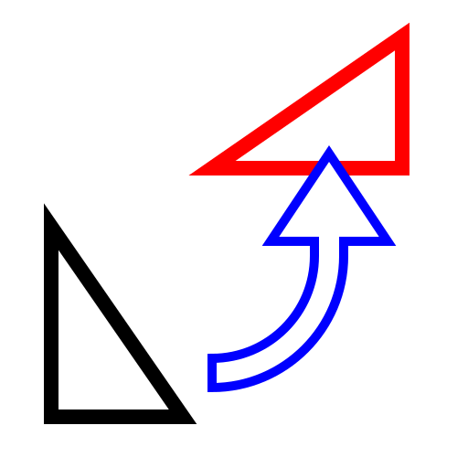

Rotate
Toolbar / Icon:


Menu: Modify > Rotate
Shortcut: R, O
Commands: rotate | ro
Description:
Rotates entities by a given angle around a given center.
Procedure:
- Select the entities you want to rotate.
- Launch this tool.
- Set the center of the rotation with the mouse or enter a coordinate in
the command line.
- The rotate dialog is displayed where you can enter the number of copies
and the rotation angle.
If you want to specify the rotation angle with the mouse cursor, check
the mouse cursor button that is displayed beside the angle input:
To delete the original entities, check "Delete Original", to copy them
choose "Keep Original". You can also create any given number of copies by
choosing "Multiple Copies".
The new entities are placed on the same layer as the originals and
have the same attributes. To use the current layer and current attributes
instead, tick "Use current layer and attributes".
- Click "OK".
- If you have previously chosen to specify the rotation angle by mouse, you
now have to first specify a reference point for the rotation and then a
target point. The rotation angle is the angle enclosed by the reference
point, center of rotation and target point.